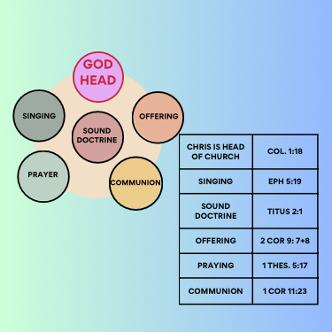
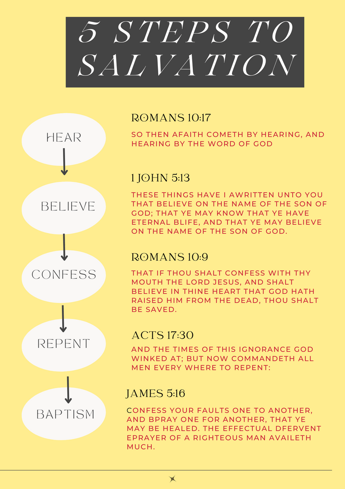
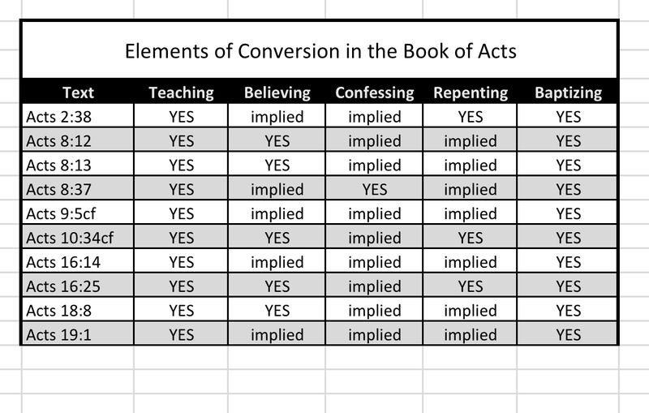

Learn how we worship and what we believe, according to the New Testament pattern.

Jesus Christ is God in bodily form (Colossians 2:9). Jesus Christ is the head of the body, the church (Colossians 1:18). The Bible states that followers of Jesus Christ are to worship him in spirit and truth (John 4:23-24).
We believe in teaching and preaching from the Bible as written in scripture — in accordance with sound doctrine (Titus 2:1; 1 Corinthians 4:17).
"Speaking to one another in psalms and hymns and spiritual songs, singing and making melody with your hearts to the Lord." (Ephesians 5:19)
As God blesses us throughout life, we give a fraction of what we receive for the upbuilding of God's kingdom (2 Corinthians 9:7-8).
Each first day of the week, we break bread in communion with one another to commemorate the death, burial, and resurrection of Jesus.
"The prayer of a righteous person is powerful and effective." (James 5:16)
The Bible tells us that all have sinned and fallen short of God's glory (Romans 3:23). If we believe in God and follow the steps of salvation, we are promised eternal life (John 3:16; Hebrews 5:8-9).

Here are examples of conversions that took place in the book of Acts, with a chart detailing the steps taken to reach salvation.
